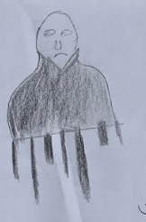

In the city of Cincinnati, Ohio, Gerome was cranking up the air conditioning. The entire area was experiencing an unusually early Summer. Gerome stepped outside to see how hot it was when he suddenly felt nauseous. Steadying himself against a random passer–by, he started vomiting. When the passer – by saw this, he started to run away. Feeling unbalanced, Gerome stumbled into a pit with a thump. As it was an early Summer, Gerome was sweating heavily. He was thirsty and stayed in the pit for approximately five minutes and 186 seconds. Due to his polydipsia, Gerome made the decision to drink some water from the infinitesimal stream. As soon as he took a single sip, he was forced to spit it out due to its salinity.
It was at this moment when postman Amantha was riding his Green Kawasaki Ninja 1000 to deliver the mail. Dropping in a letter for Gerome, he continued on his own sperate quest to deliver mail to all the citizens of Ideal street. After many futile attempts to leave the hole, Gerome, resigned and decided to open and read the letter he had received.

Then, before his eyes, some of the letters were removed while more were added.

Discerning the letter was a fake due to lack of information, Gerome decided not to take the risk, so when Amantha returned to the hole with a role ladder, Gerome climbed out the pit and went back inside the fresh, cool house. Just as he was fixing himself a frosty cup of coke, he heard a knock at the door. Wondering who it was, he dawdled towards it.
When he opened the door, he was shocked to see Amantha the postman outside. Inviting him in, he enquired about his sudden appearance
“I see you did not follow the instructions in the letter." He said, “You had one job and you decided to walk away from it."
Taken aback, Gerome responded with his default apology, “I’m sorry." He said, “I didn’t think the letter was real. It looked like someone just decided to prank me as it had no information."
“I understand, Gerome, but I am here to tell you it’s not a prank and it’s a very serious thing. To make you understand how serious, I have brought a letter from your parents."
The letter read,
Dear Gerome,
How are you doing in your city life?
At the farm, the water all salty and this is a real problem for the plants and animals. If this continues, we will have to leave and move to a new place. We are hoping this is not happening to you as well.
Regards,
James & Linda.
After reading the letter, Gerome desperately felt the urge to assist his parents. Amantha suggested they travel to New Delhi to meet Benjamin who is the main spokesperson of the International Water Service in the USA. Sensing he had no choice; Gerome booked the plane tickets.
After checking into the airport, Gerome had about an hour of time to research. Pulling up the climate graph for New Delhi¸ he set to work analysing it.

After landing, going through customs, and leaving the airport, Gerome stepped out and the first thing he did was drink some water. Looks like New Delhi is also experiencing an early Summer. He thought. After enjoying his drink, Gerome set out for Asola-Bhatti Wildlife Sanctuary. Even though it was an oak forest, there was a Sycamore that did not belong here, while he was striding towards said tree, Gerome considered the fact no animal nor bird was moving around the forest. After he arrived at the foot of the Sycamore, he peered inside. The interior was extremely old fashioned, with a newly refurbished fireplace and a single chair in the middle. Gerome entered the tree and greeted Benjamin who turned out to be an extremely young man with the wisdom of an extremely old man. Benjamin sits Gerome into an electric chair and instructed him not to move, unbalanced, he obeyed.

When he was ready, Benjamin explained everything, “All the water around America and India, has been tainted by Mike Williams, a sociopath who hates humanity because they would not do anything about water pollution. This is why he attempted cloud farming and injected some toxins into the clouds after condensation but just before they precipitated so that while they were still a gas, they would absorb the toxins so that when it rained in either a liquid or solid form, they would still carry the water and affect the entire water cycle. He has also drunk a lot of water so that when the water evaporates, there is less water left in the so – called ‘closed cycle' water cycle. so that the toxins remain in the aquifer. He must be stopped quickly because the toxins are self – multiplying and they are going through the run – off as well as the groundwater movement. Also, because the longer you delay, the more times the toxins will infiltrate the ground along with the water. This may seem like a lot, but don’t worry, the native trees can help you on your quest as they can use transpiration to put water back into the atmosphere also, there is a gadget Mike keeps closely guarded called the COW. It stands for Controller of all Water. After you acquire this, you must bring it to me, and we have instantly won. Now go! Because the longer you wait, the more the weather will be affected and that can lead to a different climate."
Armed with the knowledge of what he must do, Gerome and Amantha marched to the rented Gun Metallic 2021 Nissan Navara ST-X. When he took a deep breath, Gerome noted the unmistakable fragrance of a recently serviced car. He also observed the cleanliness of the outside body even though they were just outside Benjamin’s tree.
After equipping themselves with rope, grappling hooks, and thick boots, Gerome & Amantha decided to collect soil samples of nearby areas so that they could triangulate the general area of water contamination. After five successful extractions, they hit a roadblock, the local police were not pleased with them collecting soil samples as they both look like Western spies. This means they lost all five of their samples. After a lot of arguing and threats, Gerome and Amantha decide it is not worth the confusion, so they left. After they left, they decided to attempt to talk with the IB or the Intelligence Bureau.
After explaining themselves to the guard, they were allowed to look at Mike’s files. It stated he lived in a suburb with his pet door, had no family and spends most of his time in his lair which is located in a cave where there is a lot of water. This did not help but after filtering through all the caves with smart question they could locate the perfect cave. Some of these questions include:
“How many caves have water in them?"
“Which caves are big enough to hide a base?"
“Which caves are not being monitored?"
After all these questions, they finally found the one perfect cave.
While Gerome was commando crawling through the ventilation system, he noticed no matter how much of a racket his obnoxious ‘friend’, Amantha made, no one came after them, Mike must not enjoy the sound of his Mitsubishi air conditioner. He thought. After what felt like millenniums of crawling, Gerome and Amantha came to an a/c output. Peering down, they spotted who they would assume to be Mike. He had an ancient, lanky frame and looked as if he bleached his head. Gerome noticed he was completely bald and could not complete a conversation with his engineer without staring into the distance.
Clang!
Mike looks up. Using his telepathy, he bent the entire vent and Gerome & Amantha plummeted down. After looking down, Gerome saw that he has landed on top of Amantha’s head. Having just fallen 2.5 metres, Gerome lost consciousness.
When he woke up, he was back in his own house. But Gerome sensed something was not as it should have been. When he turned around, Mike was directly behind him.
“You have one chance to tell me why you’re in my house." Gerome shakily whispered.
“Ha, you think this is your house?" Mike questioned, “You are actually in my prison." Looking at Gerome’s face, he adds, “Don’t worry, you can go about your daily routine, getting up at 7:30, having breakfast at 8, then sitting on the couch while waiting for mail, working from home, having no friends or communication to the outside world."
“I do have a friend, where is he?"
“Oh, you mean Amantha, well, he died." Mike’s voice was almost sympathetic. Almost.
“Why’d you kill him?"
“I’m not the one who landed on his head. That was you."
Silence swept the room like a hawk’s wing. Eventually, Mike left, and Gerome was left to his own ‘house’. After mourning over Amantha, Gerome decides to give up and go home. So, just after eating his lunch, Gerome ran. When he reached the door to the bridge, he peered in. What he saw inside shocked him.
Back at Benjamin’s tree, it was tea–time this is the reason why he had called his younger brother on Skype. Noticing Gerome looking into the room in the background, Benjamin informed his younger brother that his prisoner escaped. Benjamin sent his own robots to capture Mike’s prisoner, Gerome.
Listening to their conversation, Gerome concluded that Benjamin had not passed on all the knowledge he possessed. This fuelled the anger and motivation to try again and save the Earth’s water. However, upon hearing the whirr of drones, Gerome lost heart and retreated to his apartment in New Delhi. Out of breath, Gerome rested for a bit just before entering the building. While he was rested, he checked the mail and found a package addressed to him. Wondering what it was, he opened it there and then. Glancing inside, he found the COW. Gerome still didn’t want to face Mike or Benjamin, now that he knew they were working together. However, he knew the entire population of Earth would die because of lack of clean water. So, he made the arduous decision to return to the tree.
On the way to the tree, Gerome decides he finally wants to get a job as an undercover police officer so that he could see the first–hand the punishment of Benjamin and Mike. This is why Gerome made a detour to the police station, The agency being extremely desperate for employees, helped him to make this dream come true. As he had already been in the field, he was chosen to lead a squad of the highest – ranked men to Benjamin’s tree. To their surprise, the Sycamore tree had vanished, this was a major setback in their investigation. Due to this, the squad marched to Mike’s base. However, the entire base was utterly deserted, however, there were carelessly left evidence that proved Gerome’s story to be true. After eventually tracking down Mike and Benjamin, they were both charged $4,285,091,367.52 for attempting to mass genocide all the life on Earth.